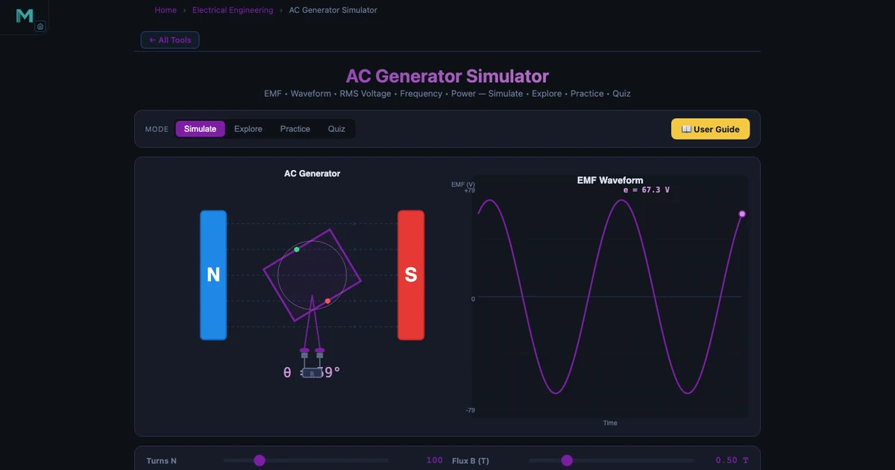
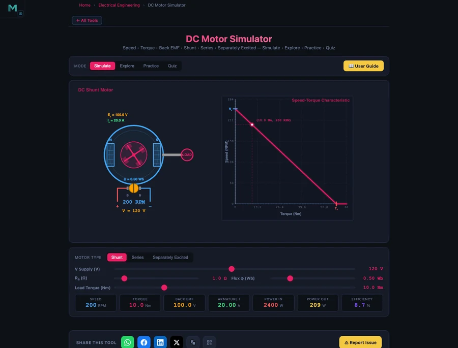

Learn Electrical Engineering With Simulators — Free Student Guide

- Interactive simulators teach electrical engineering by making invisible quantities visible: adjust a resistor and watch current change, rotate a coil and see the EMF sine wave appear, charge a capacitor and track the voltage curve climb.
- Five free browser tools cover the first-year syllabus — Ohm's Law (V = IR, twelve preset circuits), AC Generator (peak EMF E0 = NBAω), DC Motor (back EMF Eb = V − IaRa), RC Circuit (time constant τ = RC), and the Kirchhoff multi-loop solver.
- The most effective routine is predict, simulate, compare, correct: work the formula on paper first, then verify the live readout in the simulator and fix any mismatch.
Electrical engineering has a reputation problem in the classroom. Mechanics students can watch a gear turn or a beam deflect. Thermal students can see steam and feel heat. Electrical students get arrows on a diagram and a told story about electrons they will never directly observe. The subject is fundamentally invisible, and invisible subjects are hard to teach and harder to retain.
The solution is not a better diagram. It is interaction. When a student adjusts a resistor and watches current change, or rotates a coil and sees a sine wave appear, or connects a capacitor and tracks the voltage curve climbing toward the supply rail, the physics becomes real in a way that no whiteboard explanation can match. This guide covers five free simulators — from Ohm’s Law to Kirchhoff’s multi-loop solver — and shows how to build a coherent self-study routine around them.
The Invisible Subject — Why Electrical Engineering Is Hard to Teach
Walk into any first-year electrical module and the first week covers Ohm’s Law. Students copy V = IR into their notebooks without objection. Ask those same students two weeks later which resistor in a series circuit drops more voltage and the room goes quiet. The formula was memorised but never understood, because there was nothing to understand it against. A number on paper does not feel like a voltage drop.
The problem compounds as the syllabus moves forward. KVL and KCL require sign conventions that are difficult to apply consistently without practice. AC generation involves rotating phasors that students visualise differently depending on how the diagram is drawn. DC motors introduce back EMF — a quantity that appears to oppose the supply but actually enables the motor to run at steady speed — and that conceptual reversal trips up most students on paper.
Research in vocational and engineering education consistently shows that active engagement with a simulated system produces better retention than passive note-taking. A student who has adjusted coil speed and watched peak EMF change has done something. That doing creates a memory trace that a formula alone does not. The five tools in this guide exist to provide exactly that kind of engagement — free, in a browser, with no setup required.
Tool 1: Ohm’s Law Simulator — Circuits You Can Build Instantly
The Ohm’s Law Simulator is the natural starting point. It ships with twelve pre-built circuits covering every topology a first-year student will encounter: single resistor, series, parallel, mixed, LED, voltage divider, Wheatstone bridge, and a two-loop KCL network. Each loads in one click. Each is fully editable — change a component value and the circuit re-solves instantly.
For a series circuit the total resistance is found by simple addition:
\[R_{\text{total}} = R_1 + R_2 + R_3 + \cdots\]
For a parallel circuit every branch sees the full supply voltage, so the total resistance is found from the reciprocal rule:
\[\dfrac{1}{R_{\text{total}}} = \dfrac{1}{R_1} + \dfrac{1}{R_2} + \dfrac{1}{R_3} + \cdots\]
Kirchhoff’s laws are verified on-screen rather than on paper. KVL states that the sum of voltages around any closed loop is zero:
\[\sum V_{\text{loop}} = 0\]
KCL states that the sum of currents entering any node equals the sum leaving:
\[\sum I_{\text{in}} = \sum I_{\text{out}}\]
Place a voltmeter across each component in the series preset. The readings add to the supply voltage. Place ammeters at the junction in the two-loop preset. The branch currents add to the total. No algebra. The numbers are live on the canvas.
The voltage divider preset is worth spending ten minutes on before any electronics module. Two resistors in series produce an output voltage that is a fixed fraction of the supply:
\[V_{\text{out}} = V_{\text{in}} \times \dfrac{R_2}{R_1 + R_2}\]
Change one resistor. The output shifts. Double both resistors. The output is unchanged because the ratio is unchanged. That insight — which takes two minutes on the simulator and ten minutes on the whiteboard — is the foundation of transistor biasing, sensor conditioning, and analogue interface design.
For a deeper dive into every preset and circuit mode, see the dedicated article on the Ohm’s Law Simulator — Build DC Circuits Visually.
Tool 2: AC Generator — From Coil Rotation to 230 V Mains
The AC Generator Simulator makes Faraday’s law of electromagnetic induction tangible. A rectangular coil rotates at constant speed inside a uniform magnetic field. As the coil rotates, the component of flux threading through it changes, inducing an EMF that follows a perfect sine wave. The governing equation is:
\[e(t) = E_0 \sin(\omega t) \quad \text{where} \quad E_0 = NBA\omega\]
Every variable in that formula is adjustable in the simulator. Set the number of turns N to 200, flux density B to 0.5 T, coil area A to 0.02 m², and rotational speed n to 1500 RPM. The angular velocity is:
\[\omega = \dfrac{2\pi n}{60} = \dfrac{2\pi \times 1500}{60} = 157.08 \text{ rad/s}\]
Substituting into the peak EMF formula:
\[E_0 = NBA\omega = 200 \times 0.5 \times 0.02 \times 157.08 = 314.16 \text{ V}\]
The RMS value — what a voltmeter reads on an AC supply — is:
\[E_{\text{rms}} = \dfrac{E_0}{\sqrt{2}} = \dfrac{314.16}{1.4142} = 222.14 \text{ V} \approx 230 \text{ V mains}\]
That is not a coincidence. It is exactly how real generators are designed. The simulator makes the connection between rotor geometry, rotational speed, and the voltage at every domestic socket in a 50 Hz country immediate and numerically exact.
The supply frequency follows from the number of poles and shaft speed:
\[f = \dfrac{Pn}{120} = \dfrac{4 \times 1500}{120} = 50 \text{ Hz}\]
Ask a student to find the speed needed for 60 Hz with a 4-pole machine. They should get 1800 RPM. Type it in. The frequency readout changes. Every power grid frequency in the world reduces to this arithmetic.
Tool 3: DC Motor — Understanding Back EMF and Speed Control
The DC Motor Simulator covers the two most common motor configurations — shunt and series — and the concept that students consistently find most counterintuitive: back EMF.
A DC motor converts electrical energy to mechanical energy, but as the rotor spins it acts like a generator and produces its own EMF that opposes the supply. This back EMF is proportional to speed and reduces the net voltage driving current through the armature:
\[E_b = V - I_a R_a\]
Speed is proportional to back EMF divided by flux:
\[N = \dfrac{E_b}{K\phi}\]
In a shunt motor, the field winding is connected directly across the supply, so flux φ is nearly constant at all loads. A load increase demands more torque, which requires more armature current. More current means a larger IaRa drop, which slightly reduces Eb, which slightly reduces speed. The result is a nearly flat speed–torque characteristic: speed falls only 5–10% from no-load to full-load. Shunt motors are used wherever steady speed matters — lathes, conveyors, fans.
In a series motor, the field winding carries the armature current, so flux increases with load. Torque is proportional to the square of current:
\[T \propto I_a^2\]
Double the current and torque quadruples. This makes the series motor an exceptional starter motor for heavy loads, but it also means the motor accelerates dangerously if the load is removed: with no load, Ia drops, flux drops, Eb drops, and speed races to a damaging runaway. Series motors must never run unloaded. The simulator shows this clearly in the speed–torque curve — a steep hyperbola that shoots upward as load falls to zero.
The starting current problem applies to both types. At the instant of switch-on, the rotor is stationary and back EMF is zero. The only limit on current is the armature resistance:
\[I_{\text{start}} = \dfrac{V}{R_a} \quad (E_b = 0 \text{ at startup})\]
With Ra typically below 1 Ω on a 230 V machine, starting current runs to hundreds of amperes without a starter. The simulator shows the spike and the gradual recovery as speed — and back EMF — builds.

Tools 4 & 5: RC Circuits and Kirchhoff’s Laws — Time Constants and Multi-Loop Analysis
Once a student is comfortable with steady-state DC, two tools extend the toolkit in opposite directions: the RC Circuit Simulator introduces time-dependent behaviour, and the Kirchhoff Solver handles circuits too complex for inspection.
RC Circuit — Charging and Discharging
When a capacitor charges through a resistor, the voltage across it does not jump instantly to the supply voltage. It climbs along an exponential curve governed by the product RC:
\[V_C(t) = V\!\left(1 - e^{-t/RC}\right) \quad \text{(charging)}\]
The time constant τ = RC is the time for the voltage to reach 63.2% of the supply. At five time constants the capacitor is effectively fully charged (99.3% of supply):
\[\tau = RC, \quad V_C(\tau) = 0.632\,V, \quad V_C(5\tau) \approx V\]
Discharging follows the mirror image:
\[V_C(t) = V_0\,e^{-t/RC}\]
The RC Simulator plots both curves live. Drag the R slider from 1 kΩ to 100 kΩ and watch the curve stretch horizontally — the same rise, slower in time. Increase C and the same thing happens. The product RC is what determines the speed, not either component alone. Students who have spent five minutes here never confuse “bigger capacitor” with “faster charging” again.
Kirchhoff Solver — Multi-Loop Circuits Made Systematic
Real circuits have multiple loops, multiple branches, and no obvious simplification. Kirchhoff’s laws still apply at every node and loop, but the simultaneous equations become unwieldy by hand. The Kirchhoff Solver handles this automatically using mesh analysis and the node voltage method.
KVL applied to each mesh produces a system of equations. For a two-mesh circuit:
\[\sum V_{\text{mesh 1}} = 0, \quad \sum V_{\text{mesh 2}} = 0\]
KCL applied to each node produces additional constraints:
\[\sum I_{\text{into node}} = \sum I_{\text{out of node}}\]
The solver accepts circuit topology, component values, and source voltages, then returns all branch currents and node voltages simultaneously. The value is not that it replaces the hand calculation — students should still work the two-mesh example by hand first — but that it verifies the answer instantly and highlights which sign or branch direction was wrong when the numbers do not match.
For a broader discussion of why online tools are reshaping electrical engineering education — and what challenges instructors still face with virtual delivery — see the companion article on Online Teaching Challenges in Electrical Engineering.
How to Build a 12-Week Electrical Engineering Study Routine
A simulator without structure is a toy. With structure it becomes a study partner. The following twelve-week progression matches a typical first-year electrical module, using the five tools above in sequence.
Weeks 1–2: DC Fundamentals. Start with the Ohm’s Law Simulator. Work through every preset in order. For each one, write down the expected V, I, and R before pressing Run, then compare your prediction to the readout. Every mismatch is a gap to close. Finish week two by building a voltage divider from scratch — no preset — and hitting a target output voltage within 5% using only chosen component values.
Weeks 3–4: Kirchhoff’s Laws. Move to the Kirchhoff Solver. Draw a two-loop circuit on paper, label all meshes and nodes, apply KVL and KCL by hand, and solve the system. Then enter the same circuit into the solver and compare node voltages and branch currents. Repeat with a three-loop circuit. The goal is not to use the solver instead of the algebra — it is to use the solver to build confidence in the algebra.
Weeks 5–6: AC Generation. Open the AC Generator. Derive E0 = NBAω on paper for the default settings, then verify against the simulator. Work through the frequency formula for 2-pole, 4-pole, and 6-pole machines. Sketch the sine wave at various phase angles from memory, then compare to the oscilloscope panel. Finish by calculating what N or B change would produce exactly 400 V peak from a 4-pole machine at 1500 RPM.
Weeks 7–8: DC Motors. Load the shunt motor. Record speed at no load, half load, and full load. Calculate the percentage speed regulation. Switch to series motor. Record speed at the same load points — notice how different the curve is. Derive starting current for both motor types at the default supply voltage. Check against the simulator’s current readout at zero speed.
Weeks 9–10: RC Transients. Open the RC Simulator with R = 10 kΩ and C = 100 μF. Calculate τ. At t = τ, 2τ, 3τ, and 5τ, predict VC from the formula, then read the value from the simulator’s curve. Build the table by hand first; use the simulator to mark each point on the live waveform. Switch to discharge mode and repeat.
Weeks 11–12: Integration and Mixed Problems. Treat the simulators as a verification layer, not a primary source. Work exam-style problems from your textbook. After solving on paper, check each answer using the relevant simulator. Any discrepancy longer than ten minutes to resolve is worth writing up as a learning note and revisiting before the exam.
The rhythm — predict, simulate, compare, correct — is the key. It is the same process a professional engineer uses when checking a hand calculation against a software tool. Building that habit at student level pays dividends across every technical subject that follows.
Try It Yourself
All five tools are free — no account, no download. Open them in any browser and start experimenting immediately.
Key Takeaways
- Electrical engineering is uniquely difficult to teach from diagrams alone — interaction with a live simulation produces the physical intuition that formulas on paper cannot.
- The Ohm’s Law Simulator covers all twelve essential DC circuit topologies, verifies KVL and KCL on-screen, and makes the voltage divider ratio rule tangible in minutes.
- The AC Generator links coil geometry (N, B, A) and shaft speed (ω) directly to peak EMF and mains voltage; at 200 turns, 0.5 T, 0.02 m², and 1500 RPM the result is 314.16 V peak and 222.14 V RMS — matching 230 V mains.
- Shunt motors have a nearly flat speed–torque curve (5–10% drop); series motors produce torque proportional to I² and must never run unloaded. Back EMF Eb = V − IaRa is what limits steady-state armature current in both types.
- The RC time constant τ = RC determines charging speed; at t = τ the capacitor voltage is 63.2% of the supply; at t = 5τ it is fully charged.
- A 12-week predict–simulate–compare routine builds both formula fluency and the verification habit that professional engineers use every day.
Frequently Asked Questions
Can I learn circuit analysis from the Ohm’s Law Simulator without prior knowledge?
Yes. The simulator is designed for students with no prior circuit experience. It includes twelve pre-built circuits you can load in one click — from a single resistor up to a two-loop KCL network. You drag components, wire them by clicking ports, and press Run. The simulator solves V = IR using Modified Nodal Analysis and displays current, voltage, resistance, and power on-screen. Most students get their first circuit running in under two minutes and start adjusting values to see the effect within five.
What does the AC Generator Simulator teach about electromagnetic induction?
The simulator shows Faraday’s law in motion. A rectangular coil rotates inside a uniform magnetic field and the simulator calculates the instantaneous EMF using e(t) = E₀ sin(ωt), where E₀ = NBAω. You set the number of turns N, flux density B, coil area A, and rotational speed n (RPM), then watch the sine wave update in real time on the oscilloscope panel. At 200 turns, 0.5 T, 0.02 m², and 1500 RPM the peak EMF is 314.16 V and the RMS value is 222.14 V — close to the 230 V mains standard. The simulator makes the link between coil geometry, rotation speed, and mains voltage concrete and measurable.
Why does a DC motor need a starter, and how does the simulator show this?
At the instant a DC motor is switched on, the rotor is stationary and back EMF is zero. The armature current is then Istart = V / Ra — limited only by the low armature winding resistance, typically less than 1 Ω. On a 230 V supply that produces hundreds of amperes, enough to overheat windings or blow fuses. A starter inserts external resistance in series with the armature at startup to limit this surge, then cuts it out in steps as speed rises and back EMF builds. The DC Motor Simulator shows the starting current spike and the gradual reduction as back EMF Eb = V − IaRa increases with speed, making the need for a starter immediately obvious from the numbers.
What is the RC time constant and how does the simulator demonstrate it?
The RC time constant τ = RC (in seconds) describes how quickly a capacitor charges or discharges through a resistor. During charging, the capacitor voltage follows VC(t) = V(1 − e−t/RC). At t = τ the voltage has reached 63.2% of the supply; at t = 5τ it is effectively fully charged (99.3%). Discharging follows VC = V₀ e−t/RC, reaching 36.8% at t = τ. The RC Circuit Simulator plots these curves live as you adjust R and C, and marks the τ point on the graph so students can read the time constant directly from the waveform rather than computing it from memory.
How should electrical engineering students use these simulators alongside textbooks?
The most effective approach is a three-step cycle: read the theory in the textbook, reproduce the worked example in the simulator, then vary one parameter and predict the outcome before running it. For circuit analysis, work the KVL/KCL example on paper first, then verify the node voltages and branch currents in the Kirchhoff Solver. For AC generation, derive E₀ = NBAω by hand, then check the number matches the simulator’s peak EMF readout. For transient circuits, sketch the charging curve from the τ formula, then compare your sketch to the RC simulator’s live plot. The simulator confirms correct working and immediately flags errors without waiting for a lab session or a tutor.
Electrical engineering will always be an invisible subject at some level — electrons are not for seeing. But the relationships between voltage, current, resistance, frequency, and time can be made completely transparent through a well-designed simulator. Every number in every formula above can be generated on-screen in seconds, changed, tested, and tested again.
That is what these five tools exist to provide. If you are a student, bookmark all five and work through them in the order above before your next exam. If you are an instructor, put the AC Generator on the projector and let a student set the RPM. Either way, the physics stops being abstract the moment the sine wave appears. The Ohm’s Law Simulator is a good place to start — free, instant, and ready.